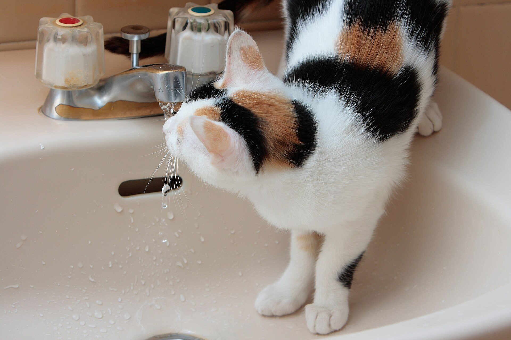
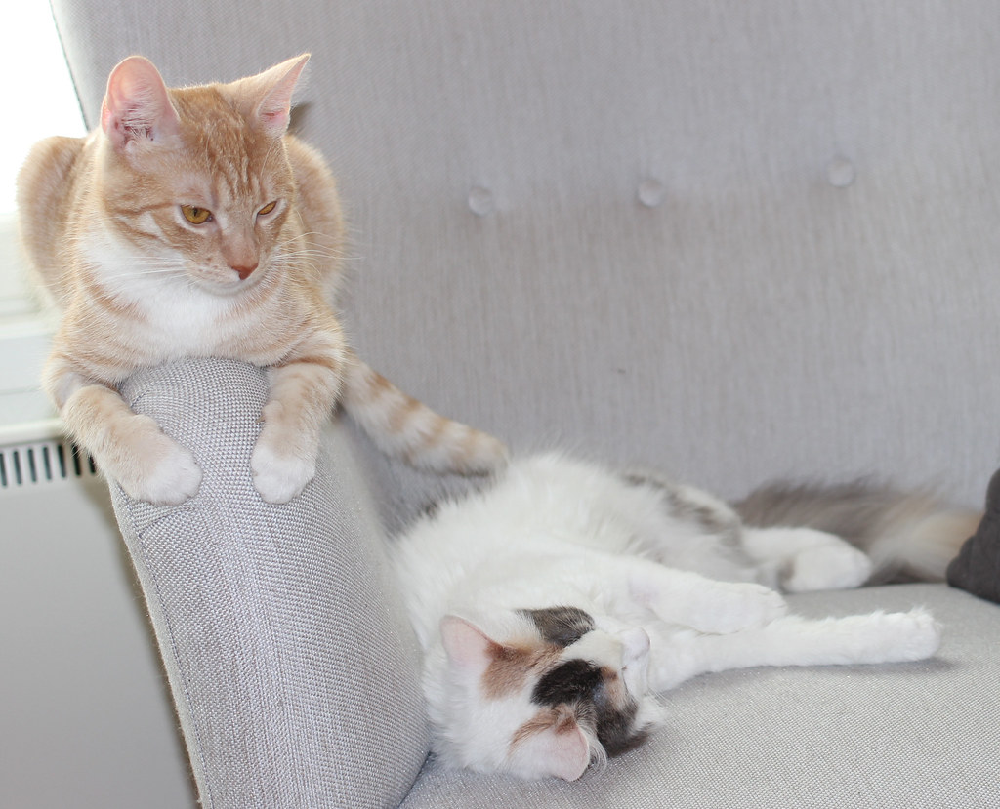
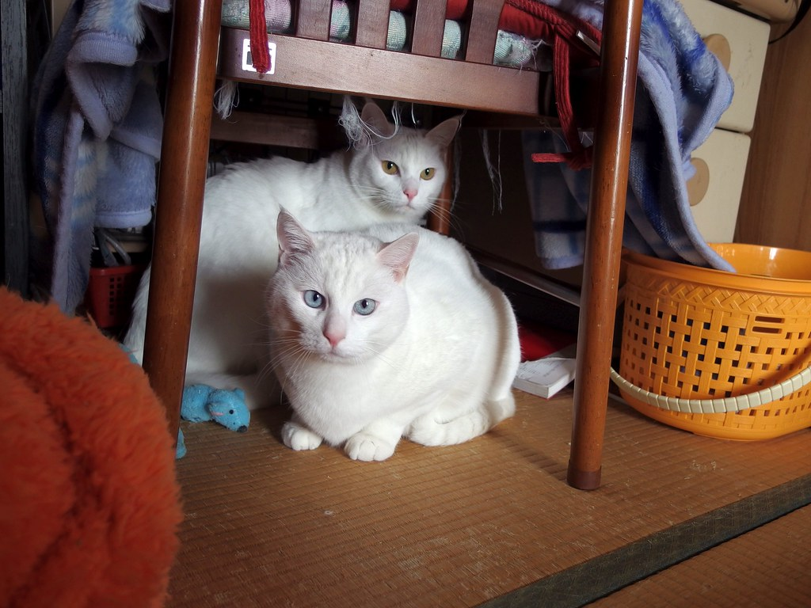
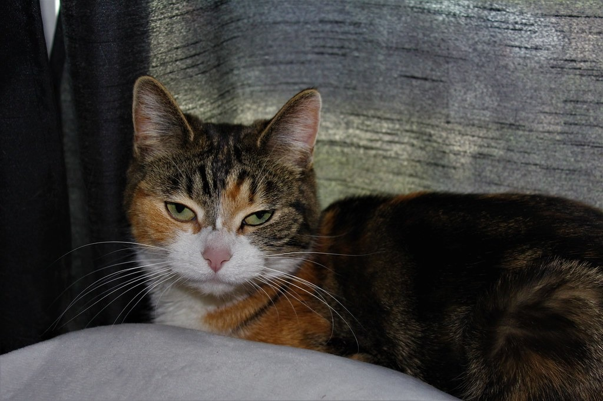

ブログ
猫が冬に水を飲まないときは？飲水量の目安と、自然に飲ませる7つのコツ
公開 2026-10-29・日本ねこ編集部
結論から言うと、猫の1日の飲水量は、体重1kgあたり40〜50mlがひとつの目安です。冬は飲む量が落ちやすく、膀胱炎や尿石症などおしっこのトラブルが増える季節。水飲み場を増やす、ぬるま湯にする、ウェットフードを足すなど、「飲みたくなる環境」づくりがいちばんの対策です。

写真：MiNe（CC BY 2.0）
暖房のきいた部屋で、うちの子が一日じゅう丸くなっている。気づけば朝入れたお水がほとんど減っていない。冬になると、そんな日が増えていませんか？
猫のご先祖さまは砂漠で暮らしていたと言われ、少ない水で生きられる体のつくりをしています。そのぶんおしっこが濃くなりやすく、泌尿器のトラブルが起きやすい動物でもあります。この記事では冬の飲水量の目安と測り方、無理なく水を飲ませるコツをまとめました。
猫の飲水量の目安は？
獣医師の宮下ひろこさんが幻冬舎ゴールドオンラインで解説している目安では、猫の正常な1日の飲水量は体重1kgあたり40〜50mlで、年齢による違いはないとされています。
| 体重 | 1日の飲水量の目安 | 多すぎのサイン |
|---|
| 3kg | 120〜150ml | 180ml以上 |
| 4kg | 160〜200ml | 240ml以上 |
| 5kg | 200〜250ml | 300ml以上 |
| 6kg | 240〜300ml | 360ml以上 |
同じ解説では、体重1kgあたり60ml以上を飲む状態は「通常より多い」とされ、早めの相談がすすめられています。少なすぎても多すぎても、体からのサインかもしれません。
ウェットフードは一般に、重さの7〜8割ほどが水分です。ウェットフード中心の子は、器から飲む量が少なくても食事から水分がとれていることがあります。
おうちでできる、飲水量の測り方
いつもの器に計量カップで量った水を入れ、12時間後に残った量を測ります。これを2回くり返せば1日分の飲水量がわかります。宮下さんの解説でも紹介されている、シンプルな方法です。
- 水飲み場が複数あるなら、すべての器で測って合計します。
- 暖房の近くの器は、蒸発するぶん少し多めに減ります。気になるときは猫が届かない場所に同じ器を置き、蒸発した量を差し引きましょう。
- 多頭飼いの場合は、一頭ずつの量はわかりません。おしっこの量や回数とあわせて見てください。
一度測っておくと、「いつもより少ない」「最近増えた」に気づきやすくなります。季節の変わり目に測る習慣をつけると安心です。
なぜ冬は水を飲まなくなるの？
アニコム損保の「どうぶつ親子手帳」では、猫はもともと泌尿器のトラブルが多い動物で、寒い時期は飲水量が落ちて膀胱炎や尿石症が増えやすいと解説されています。
冬は活動量が減り、のどが渇きにくくなります。寝床から水飲み場まで寒い廊下を歩くのがおっくうな子や、冷たい水を好まない子もいます。暖房で空気が乾くのに飲む量は減る。冬は猫にとって、水分が足りなくなりやすい季節です。

写真：andymiccone（CC0 1.0）
自然に水を飲ませる7つのコツ
1. 水飲み場を家の中に複数つくる
寝床の近くやよく過ごす部屋、廊下など、2〜3か所に器を置いてみましょう。「通りがかりにひと口」が増えるだけで、1日の量はかなり変わります。寝床から遠い場所にしか水がない家は、まずここから見直してください。
2. 冬はぬるま湯に
人肌くらいのぬるま湯にすると、よく飲む子がいます。時間がたつと冷めるので、朝と夜に入れ替えるのがおすすめです。
3. 流れる水を用意する
蛇口から流れる水をじっと待つ猫は少なくありません。動く水が好きな子には、循環式の給水器も選択肢です。一方で、静かな器の水を好む子もいます。ペットフードの研究機関であるピュリナ研究所の解説でも、静かな水と流れる水を猫の好みに合わせて用意することがすすめられています。
4. 器の素材と形を変えてみる
ピュリナ研究所の解説では、プラスチック製の器は避けたほうがよいとされています。陶器やガラス、ステンレスの口の広い器を試してみましょう。器を変えただけで飲む量が増える子もいます。
5. ウェットフードを取り入れる
ウェットフードは、食べながら水分がとれる心強い味方です。ドライフード中心の子なら、1日1回だけウェットにするだけでも違いが出ます。
6. ドライフードに少しぬるま湯を足す
ピュリナ研究所の解説では、ドライフードに水を加えて与える方法も紹介されています。香りが立って食いつきがよくなる子もいます。ふやかしたフードは傷みやすいので、食べ残しは早めに片づけましょう。
7. 器はいつも清潔に、水は毎日新しく
猫はにおいに敏感で、ほこりや毛が浮いた水は飲まなくなることがあります。器は毎日洗い、新しい水に入れ替えてあげてください。

写真：pelican（CC BY-SA 2.0）
オス猫と、シニア猫は特に注意
アニコム損保の解説によると、下部尿路のトラブルは性別を問わず起こりますが、オスは尿道が細く長いため重症になりやすいとされています。オリコンの記事でもアニコムのデータをもとに、0〜10歳のどの年齢でも泌尿器の病気で通院した割合はオスがメスを上回っていたと紹介されています。
7歳を過ぎたシニア猫は、腎臓の働きの変化から飲水量が増えることがあります。年齢ごとの体の変化は猫の年齢早見表もあわせて参考にしてください。冬の部屋の温度や湿度の目安は猫の寒さ対策ガイドにまとめています。

写真：Dylanna Fisher（CC BY 2.0）
こんなときは動物病院へ
次のような様子があれば、早めにかかりつけの動物病院に相談してください。
- トイレに何度も行くのに、おしっこが少ししか出ない（または出ていない）
- おしっこに血が混じる。色やにおいがいつもと違う
- おしっこのときに鳴く、痛がる
- 水を飲む量が急に増えた、または丸一日ほとんど飲んでいない
- 食欲がない、吐く、ぐったりしている
特にオス猫でおしっこがまったく出ていないときは、尿道が詰まっている可能性があり、命にかかわります。様子を見ずにすぐ受診してください。夜間でも、救急対応の病院に連絡を。
まとめ
冬の水分対策は、むずかしいことより「飲みたくなる場所と温度」をつくることから。水飲み場をひとつ増やす。ぬるま湯にする。ウェットフードを少し足す。それだけで、うちの子の冬のおしっこトラブルはぐっと防ぎやすくなります。冬のおうち時間の過ごし方は室内で暮らす猫が喜ぶこと5つもどうぞ。
うちの子の「お気に入りの水の飲み方」はありますか？蛇口派にコップ派、お風呂場派。かわいい水飲みショットが撮れたら、ぜひInstagramで #JapanNeko をつけて見せてください。
参考にした情報
この記事は一般的な情報をまとめたものです。飲水量の目安には個体差があり、持病や食事の内容によっても変わります。気になることは、かかりつけの動物病院に相談してください。
よくある質問
猫は1日にどのくらい水を飲めばいいですか？
獣医師の解説では、体重1kgあたり40〜50mlがひとつの目安です。体重4kgの猫なら160〜200mlほど。ウェットフードを食べている子は、フードの水分も合わせて考えます。
冬に猫が水を飲まないのはなぜですか？
寒さで活動量が減ることや、冷たい水を好まない子がいることが理由と考えられます。猫はもともと少ない水で暮らせる体のつくりなので、水分をとりやすい環境をつくってあげましょう。
ぬるま湯をあげても大丈夫ですか？
人肌くらいのぬるま湯なら問題ありません。冬は冷たい水より飲みやすい子もいます。時間がたつと冷めるので、こまめに入れ替えましょう。
水をたくさん飲みすぎるのも心配ですか？
体重1kgあたり60mlを超える量を毎日飲むなら、腎臓病や糖尿病などのサインのこともあります。急に増えたら、かかりつけの動物病院に相談してください。
オス猫は特に気をつけたほうがいいですか？
はい。オスは尿道が細くて長いため、結石などで詰まりやすいといわれています。おしっこが出ない、またはトイレに何度も行くのに少ししか出ないときは、すぐ動物病院へ連れていってください。